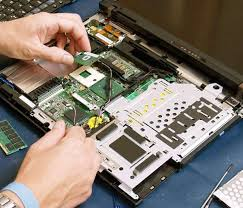
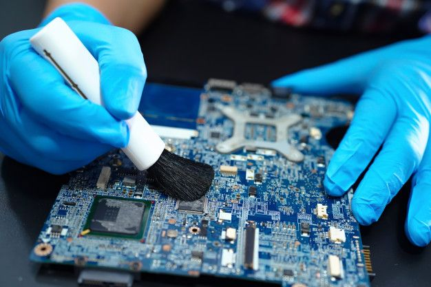
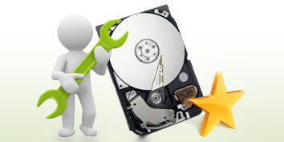
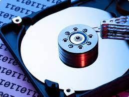
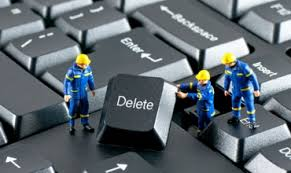

Manutenção de Computadores
Faremos a manutenção de seu computador, visando sempre a melhor qualidade com o menor custo. Traga seu computador que não está funcionando, não está lingando ou que esteja lento, os cuidados com o Hardware são essensiais para o melhor desempenho do seu computador. Aqui na vmLTech, valorizamos a vida útil de seu computador.
Limpeza
A limpeza e a boa higienização do seu PC ou Notebook é de vital importância para o bom funcionamento do mesmo. Na vmLTech, temos os melhores itens e recursos para a melhor limpeza do seu computador, tornando aquele seu pc velho e empoeirado, do qual você não liga há tempos, em um pc NOVO. E por um pequeno valor a mais, a limpeza poderá ser do conforto de sua casa, para nosso cliente não precisar se preocupar com o transporte da máquina até nossa oficina. A Limpeza terá desconto ao fazer uma Manutenção ou uma Formatação
Formatação de Computadores
Após um certo tempo de uso, o desempenho do computador pode ser afetado por diversos fatores relacionados ao Software, por isso é recomendável uma formatação de tempos em tempos e recuperar o total desempenho de seu computador. Aqui, oferecemos a formatação com a instalação do Sistema Operacional que preferir, além de instalarmos os progremas que você sentir necessidade (navegadores, descompactadores, o Office, leitores de PDF, etc). Traga seu computador para uma formatação segura e sem risco da perda de seus dados e arquivos.
Recuperação de Dados
A pior coisa que se pode ocorrer com qualquer um é a perda ou acidental exclusão de arquivos importantes, ou precisar recuperar esses dados por qualquer motivo que seja, a vmLTech irá fazer a varredura de seu HD, Pen Drive, SSD, e mais, afim de restaurar todos os arquivos do seu dispositivo.
Configuração e Preparação
Nem todos os usuários de computadores possuem os conhecimentos mais aprofundados do Hardware, e isso pode ser prejudicial, já que a instalação de programas incompatíveis ou pouco compatíveis com o Hardware pode levar a perda de desempenho. Pensando nisso, a vmLTech analisará seu computador e instalará os melhores programas para o seu desempenho. A Configuração e Preparação virá como brinde ao fazer uma Formatação